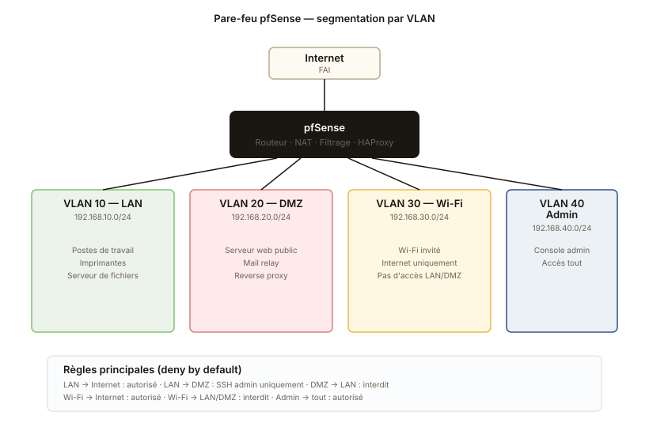

Pare-feu pfSense et segmentation VLAN
Mise en place d'un pare-feu pfSense avec segmentation par VLAN et publication d'un service web via reverse proxy.
Topologie du réseau

Le contexte
Projet de groupe à trois. On nous a confié la mise en place d'un pare-feu de bordure sur une infrastructure de TP : un réseau LAN, une DMZ qui héberge un site web, un Wi-Fi invité qui n'a pas le droit d'accéder au LAN. Tout est virtualisé sur le poste de chacun, on synchronise via un dépôt Git pour les fichiers de config.
L'architecture
Quatre VLAN ont été créés sur le switch Cisco virtuel :
| VLAN | Usage | Sous-réseau |
|---|---|---|
| 10 | LAN — postes de travail | 192.168.10.0/24 |
| 20 | DMZ — serveurs publics | 192.168.20.0/24 |
| 30 | Wi-Fi invité | 192.168.30.0/24 |
| 40 | Admin | 192.168.40.0/24 |
Le pfSense est branché en routeur principal avec une interface par VLAN. Il fait aussi le NAT vers Internet et le filtrage strict entre les zones.
Les règles de filtrage
Politique deny by default sur tous les VLAN. Ensuite on n'autorise que ce qui est strictement nécessaire :
- LAN → Internet : OK pour le web (80/443) et le DNS (53)
- LAN → DMZ : seulement pour l'admin du site web (port 22 SSH)
- DMZ → LAN : interdit complètement (principe de la DMZ)
- Wi-Fi invité → Internet : OK
- Wi-Fi invité → LAN/DMZ : interdit
- Admin → tout : OK (mais cette VLAN ne contient que la machine de l'admin)
Reverse proxy avec HAProxy
Le site web est en DMZ sur le port 8080. Plutôt que de l'exposer directement en NAT, on a installé HAProxy sur le pfSense (paquet officiel) qui écoute sur le port 443 public et redirige vers la DMZ. Avantages :
- On peut faire du HTTPS au niveau du proxy avec un seul certificat
- On peut héberger plusieurs sites derrière sans toucher au pare-feu
- On peut bloquer des IP malveillantes au niveau du proxy
Ce que j'ai appris
L'ordre des règles de filtrage, c'est pas une option. Quand j'ai mis ma règle "deny everything" en premier, plus personne ne pouvait passer. Quand je l'ai mise en dernier, plus rien n'était bloqué. Évident sur le papier, beaucoup moins sur pfSense où on clique sur des boutons.
J'ai aussi compris pourquoi les pros font toujours une zone d'admin séparée. Si tu travailles depuis le LAN normal et que tu te coupes l'accès, tu cours physiquement en salle pour rebooter. Avec une zone admin séparée, tu peux t'auto-bloquer mais tu peux toujours te reconnecter par l'autre côté.